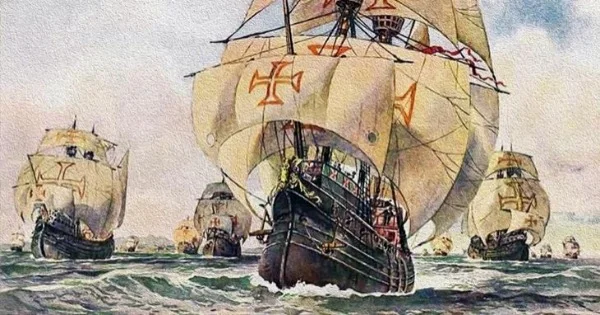

Veja
Navegações Portguesas
Introdução
No século XV, Portugal era uma nação politicamente estável. Essa estabilidade foi garantida pela Revolução de Avis, realizada entre 1383 e 1385. Com isso, Portugal teve melhores condições para investir no desenvolvimento do comércio e da tecnologia náutica. Em comparação, às nações vizinhas (Espanha, França e Inglaterra) ainda procuravam estabilidade política nesse mesmo período.
Como tudo na história, o pioneirismo português não foi por acaso e sim resultado de uma série de fatores que permitiram a esse pequeno país da Península Ibérica lançar-se nessa empreitada.
Do ponto de vista econômico, Portugal desempenhava um papel central como um importante centro comercial. De acordo com o historiador Boris Fausto, sua principal cidade, Lisboa, já estabelecia contatos comerciais de longa distância desde o século XIII. Lisboa mantinha relações comerciais com mercados árabes, e o comércio local havia prosperado consideravelmente por meio de financiamentos realizados pelos genoveses. Nesse contexto, Portugal alcançou uma posição de destaque no cenário comercial, onde a influência dos mouros durante o período em que dominaram a Península Ibérica, acabou contribuindo para a vocação comercial dos portugueses.
Motivos que levaram à expansão marítima
Ao mesmo tempo, o país enfrentava uma série de desafios econômicos que precisavam ser resolvidos. A coroa portuguesa estava enfrentando escassez de metais para cunhar moedas, além da falta de produtos agrícolas e mão de obra insuficiente. Além disso, havia a necessidade de expandir os mercados. Como resultado, uma parte da nobreza e da burguesia viu na conquista de rotas marítimas uma oportunidade de alcançar essas terras e mercados.
Junto a isso, o mercado árabe possuía dois importantes itens para os portugueses: ouro e especiarias. O consumo das especiarias foi introduzido na Europa depois das Cruzadas, e elas eram muito utilizadas na conservação de alimentos e na produção de perfumes e medicamentos. Eram mercadorias valiosas e rendiam um lucro muito alto. O fechamento da rota que passava por Constantinopla, em 1453, tornou mais complicado o acesso a essa mercadoria.
Outro fator era a questão territorial, uma vez que o território português já havia sido consolidado desde o século XIII, quando a região de Algarve foi reconquistada dos mouros (muçulmanos que invadiram a Península Ibérica no século VIII). Os vizinhos espanhóis, por exemplo, só garantiram certa unificação territorial no final do século XV.
A localização geográfica também desempenhou um papel fundamental nesse contexto. Portugal estava posicionado mais a oeste do que qualquer outra nação europeia e era o país mais próximo da costa oeste do continente africano. Essa posição estratégica tornou Portugal o ponto de partida ideal para expedições em busca de uma nova rota para alcançar a Índia e o valioso comércio de especiarias.
Em relação à tecnologia e ao conhecimento náutico, existem muitos historiadores que atribuem uma grande importância à Escola de Sagres, centro de estudos construído por infante D. Henrique em Algarve. Nesse local, promoviam-se pesquisas de desenvolvimento de melhores técnicas de navegação.
Pode-se afirmar que a sociedade portuguesa incentivava a navegação atlântica, o que fez dela um grande projeto nacional. Uma vez que a maioria das camadas da sociedade se beneficiariam de alguma forma, aos comerciantes porque lhes trazia perspectivas de bons negócios; para a Coroa, representava a chance de reforçar os cofres; para nobreza e Igreja, trazia possibilidade de cristianizar pagãos e conquistar influência e riqueza; e para o povo em geral, trazia chance de uma vida melhor.
A combinação desses fatores criou as condições necessárias para que Portugal se tornasse a nação pioneira das Grandes Navegações, um processo que resultou em grandes "descobertas".
Conquistas
A primeira grande conquista portuguesa foi a cidade de Ceuta, ocorrida em 1415. Ceuta era ponto de encontro de várias caravanas árabes. Os navegadores portugueses foram contornando a costa da África pelo Oceano Atlântico, num empreendimento organizado por, entre outros, o Infante Dom Henrique.
Em resumo, eles chegaram a uma série de ilhas no Atlântico, encontraram uma rota alternativa para a Índia, e chegaram ao Brasil no final do século XV. Os espanhóis, por sua vez, chegaram à América primeiro, em 1492.
Conclusão
As Grandes Navegações foram responsáveis por transformar Portugal na maior potência do mundo durante os séculos XV e XVI, por meio do grandioso império ultramarino formado pelos portugueses. Assim, Portugal estabeleceu colônias em diferentes partes do mundo: América do Sul, África e Ásia.
Assista
Videoaulas
{kind=link}
{kind=link}